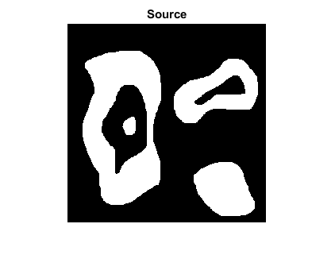
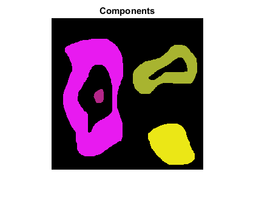
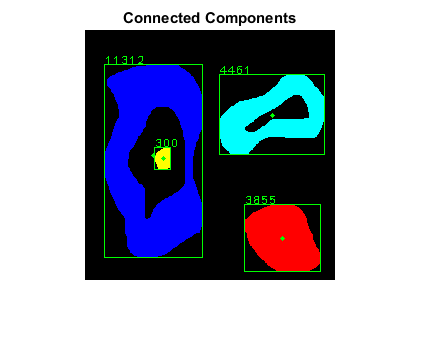

Contours demo
The example below shows how to retrieve connected components from a binary image and label them.
Contents
Image
load binary image (black-and-white, logical)
bw = imread(fullfile(mexopencv.root(),'test','bw.png')); imshow(bw), title('Source')
Connected Components
[contours, hierarchy] = cv.findContours(bw, ... 'Mode','CComp', 'Method','Simple');
iterate through all the top-level contours, draw each connected component with its own random color
dst = zeros([size(bw) 3], 'uint8'); idx = 0; while idx >= 0 clr = randi([0 255], [1 3], 'uint8'); dst = cv.drawContours(dst, contours, ... 'Hierarchy',hierarchy, 'ContourIdx',idx, ... 'Color',clr, 'Thickness','Filled', 'LineType',8); idx = hierarchy{idx+1}(1); end
show result
imshow(dst), title('Components')Connected Components
a different way to perform connected components labeling
[labels, num, stats, centroids] = cv.connectedComponents(bw);
convert labels to one-based floating-point indices, background being label 1
labels = double(labels) + 1; if mexopencv.require('stats') tabulate(labels(:)) end
Value Count Percent
1 42572 68.12%
2 11312 18.10%
3 4461 7.14%
4 300 0.48%
5 3855 6.17%
color-code labels
clr = [0 0 0; jet(num-1)]; % black for the background
out = uint8(255 * ind2rgb(labels, clr));draw bounding box, centroid, and area of each component
opts = {'Color',[0 255 0]};
for i=2:num % skip first background label
out = cv.rectangle(out, stats(i,1:4), opts{:});
out = cv.circle(out, centroids(i,:), 2, 'Thickness','Filled', opts{:});
out = cv.putText(out, sprintf('%d',stats(i,5)), stats(i,1:2), ...
'FontFace','HersheyPlain', 'FontScale',0.8, opts{:});
endshow result
figure, imshow(out), title('Connected Components')